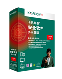
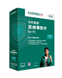

产品介绍
卡巴斯基
PURE3.0
卡巴斯基 PURE 3.0 是一款全方位的安全解决方案，为您的个人电脑、数字身份、文件、照片、音乐、密码等提供终极保护，使其免受复杂多变的最新恶意软件和网络威胁的侵害。
免费试用 续费升级
卡巴斯基
安全软件多设备版
无论您使用何种设备在网上办理银行业务、购物或冲浪，您都面临着相同的安全风险。 恶意软件、网络犯罪和钓鱼都会对您的计算机、Mac 电脑、智能手机或平板电脑产生影响 – 因此，您需要保护您联网的所有设备。 卡巴斯基安全软件多设备版是一证式多平台解决方案，可保护计算机、Mac 电脑和 Android 设备互联网的所有威胁。
免费试用
卡巴斯基
安全软件2014
无论您何时在网上办理银行业务、购物或社交，您的 PC 和您宝贵的个人信息都面临着病毒、网络罪犯和复杂 Internet 威胁带来的风险。 卡巴斯基安全软件 2014 屡获殊荣的网络安全技术可为您的 PC、数据和身份提供安全保护。
免费试用 续费升级 |